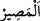

15. De ki: “Bu mu daha iyi, yoksa takvâ sâhiplerine vaad edilen ebedilik cenneti
mi?” Orası, onlar için bir mükâfat ve (huzûra kavuşacakları) bir varış yeridir.
“De ki: “Bu mu” bu azâb mı “daha iyi, yoksa takvâ sâhiplerine vaad edilen
ebedilik cenneti mi?” Allah o cenneti mutlak takvâ ile nitelenenlere vaad etmiştir,
sadece ikinci veya üçüncü mertebeden takvâ ile vasıflananlara değil. Mü’min isyankâr
da olsa müttakîdir.
Huld/ebedîlik cenneti nimetleri eksilmeyen ve ahâlisi oradan başka bir yere intikal
etmeyen ebedî yurttur. Çünkü hulûd/ebedîlik bir şeyin fesada uğramaktan uzak olması ve
mevcut hâlini koruması demektir. Cennetin ebedîliğe izâfe edilmesi övgü içindir. Yoksa
cennet zâten ebedî yurdun ismidir. Bununla birlikte cennet kelimesinin sonsuzluk
mefhûmunu içermeyen ve içinde her türlü güzelliği barındırmayan bir bahçeye delâlet
etmesi de mümkündür. Bu sebepten dolayı sonsuzluğa delâlet etmesi için ebedîliğe izâfe
edilmiştir.
Eğer “Bu ikisinden hangisinin daha hayırlı olduğunda şüphe etmek nasıl tasavvur
edilebilir ki bunu soru sormak ve tekrar etmek hoş görülsün. Akıllı bir kimsenin acı bir
ilaç olduğunu bildiği halde şeker mi daha tatlı yoksa sabır mı demesi mümkün müdür?”
denilirse şöyle söylenebilir: Daha önce de bahsettiğimiz gibi alay etmek, küçük
düşürmek ve kaçırdıklarına pişman etmek için bunlar söylenebilir.
el-Vasît’ta der ki: “Bu, iki mekân arasındaki farka dikkat çekmek içindir, yoksa
cehennemde hayır bulunduğundan değil.” Bazıları da “Bu mecâz yollu bir anlatımdır.
Çünkü cehennemde hiç bir hayır yoktur. Araplar “Afiyet belâdan daha hayırlıdır”
derler. Allah da onlara bildikleri üslupla hitâb etmiştir.
“Orası,” o cennet “onlar için” Allah Teâlâ’nın ilminde istihkak ile değil Allah’ın
keremi gereğince onların amellerine karşılık “bir mükâfat ve (huzûra kavuşacakları)”
dönüp varacakları ve intikal edecekleri “bir varış yeridir.”
“
” zenginlik ve yeterli olmak demektir. “
” hayır ise hayır, şer ise şer olarak
yeteri kadar karşılık vermektir. Ehl-i zimmetten alınan vergiye ‘cizye’ denilir. Kanlarını
koruma karşılığında alındığı için cizye ismi verilmiştir.
“
” ile “
” arasında fark vardır. “
” ın ilk duruma yâni dönüşünün
gidişine aykırı olması gerekir. “
” ise böyle değildir.
16. Onlar için orada ebedî kalmak üzere diledikleri her şey vardır. İşte bu,